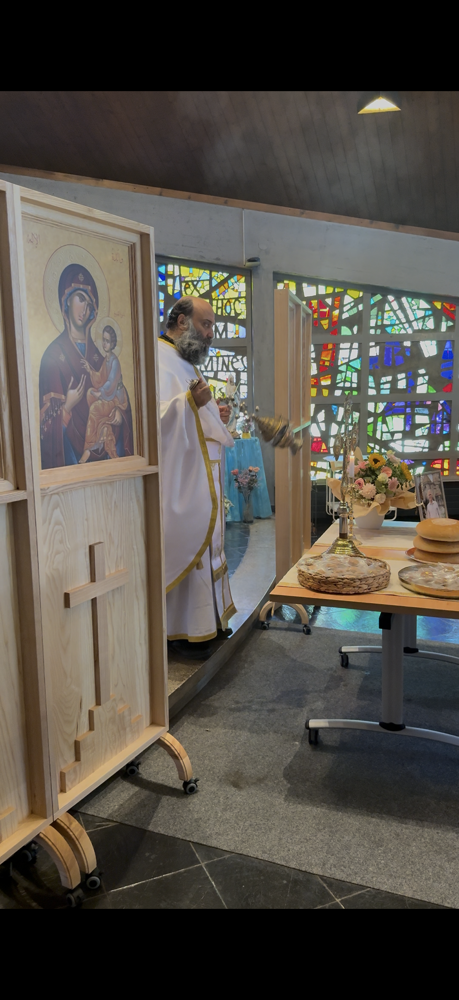

Bienvenue à l'Église Antiochienne
Horaires des messes
2ème Dimanche du mois : 10h30
4ème Dimanche du mois : 10h30
Localisation
Chemin de la Chênaie 145C,
1293 Bellevue, Genève
Prochain événement
Déjeuner de manakish - 14 septembre 2025
10h30 à Bellevue
Votre Église Orthodoxe à Genève Bellevue
Bienvenue à la paroisse de l'Église Antiochian Orthodox Geneva Switzerland. Située à Bellevue, notre communauté représente l'Église orthodoxe grecque au sein du canton de Genève et de la Suisse.
Que vous cherchiez la Greek Orthodox Church in Geneva ou l'Église orthodoxe Antiochian, nous vous accueillons pour les offices et événements communautaires. Notre paroisse est un lieu de prière, de rassemblement et de partage pour tous les fidèles orthodoxes de la région de Bellevue et de ses environs.